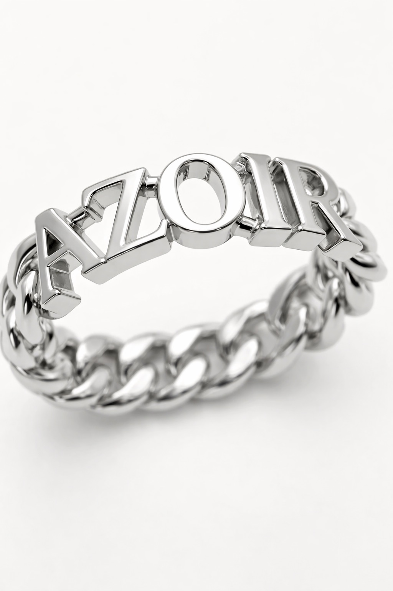

Azoir & Co. was founded in New York on a premise that felt almost old-fashioned: that fine jewelry should be made for a person, not a shelf.

We do things the slow way — one conversation, one design, one piece at a time. Every commission is a collaboration: you bring the meaning, we bring the craft, and together we make something that will outlast all of us.
Our pieces are designed with you and crafted by hand by experienced artisans, with materials sourced with care and every stone approved before it's set.
We design for a person and a moment — never for a shelf. That changes everything.
Hand-set, hand-finished, and never rushed. A piece is done when it's right.
Ethically sourced stones and metals, and full transparency about where they come from.
Our workshop is where every piece takes shape — from the first hand sketch to the final polish. It's small on purpose. We take a limited number of commissions each month so that yours gets the attention it deserves.
No mass production. No stock. Only the piece that is meant for you.
Tell us what you're imagining. A designer will reply within one business day.
Begin a commission